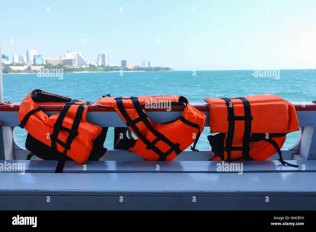

Kenya Marine Supplies Limited is a trusted supplier of marine equipment and services serving the Kenyan coastline and the wider East African region. Based in the port city of Mombasa, we support fishing crews, shipping companies, tour operators and private boat owners with the products they need to stay safe and productive on the water.
Our range includes life jackets and safety gear, navigation instruments, ropes, anchors and chains, marine paints and anti-fouling coatings, outboard engine parts, fishing nets and deck hardware. We work closely with reputable manufacturers so that every item we sell meets recognised quality and safety standards.
We believe that reliable supplies and honest service keep the maritime economy moving. Our knowledgeable team offers practical advice, fast delivery to ports and landing sites, and dependable after-sales support. Whether you run a single fishing boat or a large fleet, Kenya Marine Supplies Limited is ready to be your partner at sea.
